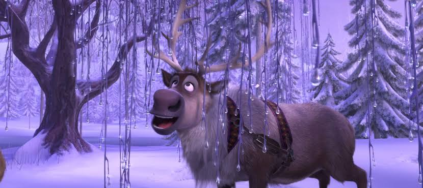
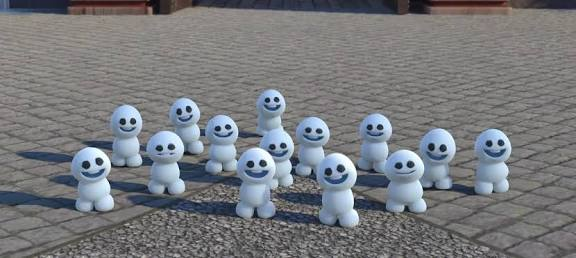

Sven

Sven é uma rena e companheiro de Kristoff. Ele acompanha Kristoff durante suas aventuras e, apesar de não falar, demonstra seus sentimentos por meio de expressões e comportamentos.
Renas
As renas aparecem em diferentes momentos do filme e fazem parte do ambiente das montanhas onde Kristoff vive. Elas também ajudam a representar a natureza presente no universo de Frozen.
Snowgies

Os Snowgies são pequenas criaturas de neve que aparecem em Frozen. Eles são pequenos e divertidos e surgem como resultado dos poderes mágicos de Elsa.
Animais presentes no universo de Frozen
- Renas
- Cavalos
- Gansos
- Pequenos animais da floresta